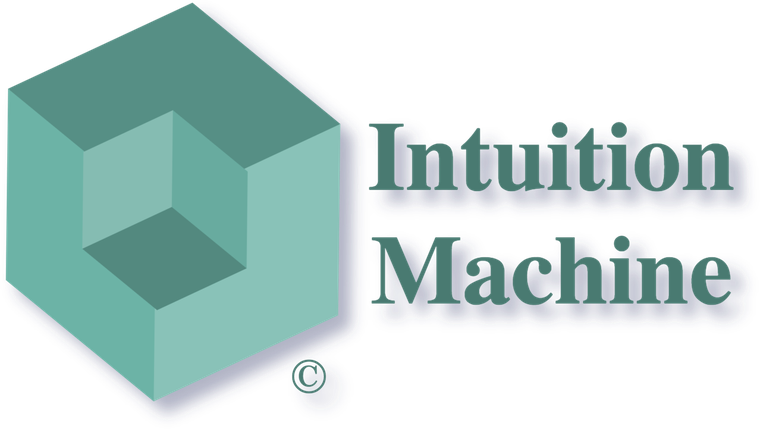

Intuition Machine
Intuition Machine

Arlington, VirginiaFounded 2015
Making the AI-native enterprise real
From AI experiments to trusted enterprise operations. We turn AI agents and experimental workflows into reliable, governed systems that work within your existing architecture, follow your organisation's rules, and deliver measurable value.
AI pilots are easy. Trusted operations are not.
An agent that impresses in a sandbox meets a different world in production: decades of technology investment, regulation, policy, approval chains and dependencies between teams that nobody ever wrote down.
That boundary is where most AI initiatives stall — not because the models are weak, but because nothing connects them to the way the enterprise actually works.
We engineer that connection. The promise is simple: move from AI pilots to scalable business operations without giving up control.
Your enterprise has rules. Your AI should know them.
Compliance is the smallest part of it. The rules of an organisation are its architecture, its roles, its operating procedures, its economic priorities and the ways its departments coordinate. We build AI that works inside all of them. The message is simple; the engineering underneath it is not.
Understand the enterprise. Deploy AI within it. Prove that it works.
Understand what it takes to deploy AI
Discover the rules, dependencies, approved technologies and constraints that apply, and the workflows that are good candidates for automation.
Turn experiments into enterprise-ready workflows
Purpose-made agent environments that integrate with your applications, identity systems, approvals and deployment standards.
Show it delivers, and stays in bounds
Evaluate outcomes, enforce policy, manage autonomy and detect drift — the evidence you need before deploying more widely.
Machines for the self-learning enterprise
Instead of asking an enterprise to model itself before it can use AI, our machines discover, validate and formalise organisational knowledge through useful work — so every operation yields a business outcome and intelligence the next one can reuse.
Construct and maintain reliable organisational knowledge
Turn knowledge into justified decisions, execution and improvement
Deliver coordinated outcomes across people and agents
The failures that matter most pass review
An AI workflow rarely fails loudly. It keeps running, keeps reporting on schedule, and quietly stops being connected to anything. These are the failures we design against.
Model output stored as fact
An agent writes what the model said straight into the record. The check was skipped, and a hallucination is now an artefact other systems rely on.
Measured against the last report
The evaluation that once compared results with what actually happened now compares them with the previous dashboard. Still on schedule; no longer measuring anything.
Coordinating on last quarter
The agent runs perfectly on inputs that were current when it was built. The loop still turns — on stale input dressed as current input.
Competent, and wrong
Every handler performs correctly and the work reached the wrong one. Each piece passes its own review; the outcome is still wrong.
A policy nobody owns any more
The agent faithfully enforces a rule written for a system decommissioned years ago. Its paper trail is impeccable. What is missing is a present-day owner empowered to change it.
Your first governed AI-native workflow
One business process. Real enterprise systems. Measurable results.
We take one workflow you choose and rebuild it with AI agents inside your existing standards, access controls and business constraints. It runs in shadow alongside the current process, so you compare results on real work before anything changes.
- A working, bounded AI workflow, initially in parallel or shadow mode
- Integration with approved systems and permissions
- Explicit evaluation and escalation criteria
- A comparison on speed, cost, accuracy and exception rate
- A documented path toward greater autonomy and reuse
ExO 3.0 shows what the AI-native future looks like. We help you build it.
ExO 3.0 describes organisations run through coordinated networks of people and AI agents. Existing enterprises have to get there from where they are — with every system, regulation and dependency they already have.
We are the engineering and assurance behind that transition: an Edge Twin that runs real work, GOVERN/ASSURE built in from the start, and infrastructure that makes the next workflow cheaper than the last.
Built on a theory small enough to check by machine
The failures above are not a checklist we invented. They come from Quaternion Process Theory of Cognition, a formal account of how organisations learn and how they quietly stop — with explicit assumptions, a machine-checked model, and its open problems published alongside its results.
What people ask us
- What does Intuition Machine do?
- Intuition Machine is an enterprise AI engineering and assurance company, founded in 2015 and based in Arlington, Virginia. We turn AI agents and experimental workflows into reliable, governed systems that work within your existing architecture, follow your organisation's rules, and deliver measurable value.
- How do you move an AI pilot into production?
- In three steps: Map, Build, Prove. Map the rules, dependencies, approved technologies and constraints that apply. Build purpose-made agent environments that integrate with your applications, identity systems, approvals and deployment standards. Prove the outcomes: evaluate results, enforce policy, manage autonomy and detect drift before deploying more widely.
- What is a governed AI-native workflow, and where should we start?
- Start with one business process. We rebuild a workflow you choose with AI agents inside your existing standards, access controls and business constraints, and run it in shadow alongside the current process. You get a bounded working workflow, integration with approved systems, explicit evaluation and escalation criteria, a comparison on speed, cost, accuracy and exception rate, and a documented path toward greater autonomy. Your first workflow.
- What are the machines for the self-learning enterprise?
- Eight specialised intelligence systems on one shared foundation, Common Ground: Sense (enterprise perception and discovery), Connection (evidence grounding and traceability), Context (organisational memory), Judgment (evaluation and decision governance), Intuition (typed cognitive dispatch), Agency (governed autonomous execution), Learning (semantic adaptation) and Choreography (coordinated action across people and agents). Instead of asking an enterprise to model itself before it can use AI, they discover, validate and formalise organisational knowledge through useful work. Meet the machines.
- How does Intuition Machine relate to ExO 3.0?
- ExO 3.0 describes organisations run through coordinated networks of people and AI agents. We are the engineering and assurance behind getting an existing enterprise there: an Edge Twin that runs real work, GOVERN and ASSURE built in from the start, and infrastructure that makes each next workflow cheaper than the last. From ExO 3.0 to production.
- Why do AI workflows fail in production?
- Rarely loudly. They keep running and quietly stop being connected to anything: model output stored as fact, evaluations that drift into comparing against the last report, agents running on stale context, work routed to the wrong competent handler, and policies nobody owns any more. We design against these failures.
- What research is the work based on?
- Quaternion Process Theory of Cognition, a formal account of how organisations learn and how they quietly stop, with explicit assumptions, a machine-checked model, and its open problems published alongside its results.
Start with one workflow.
We map your constraints, build a governed AI workflow alongside your existing operations, and prove the results before autonomy expands.